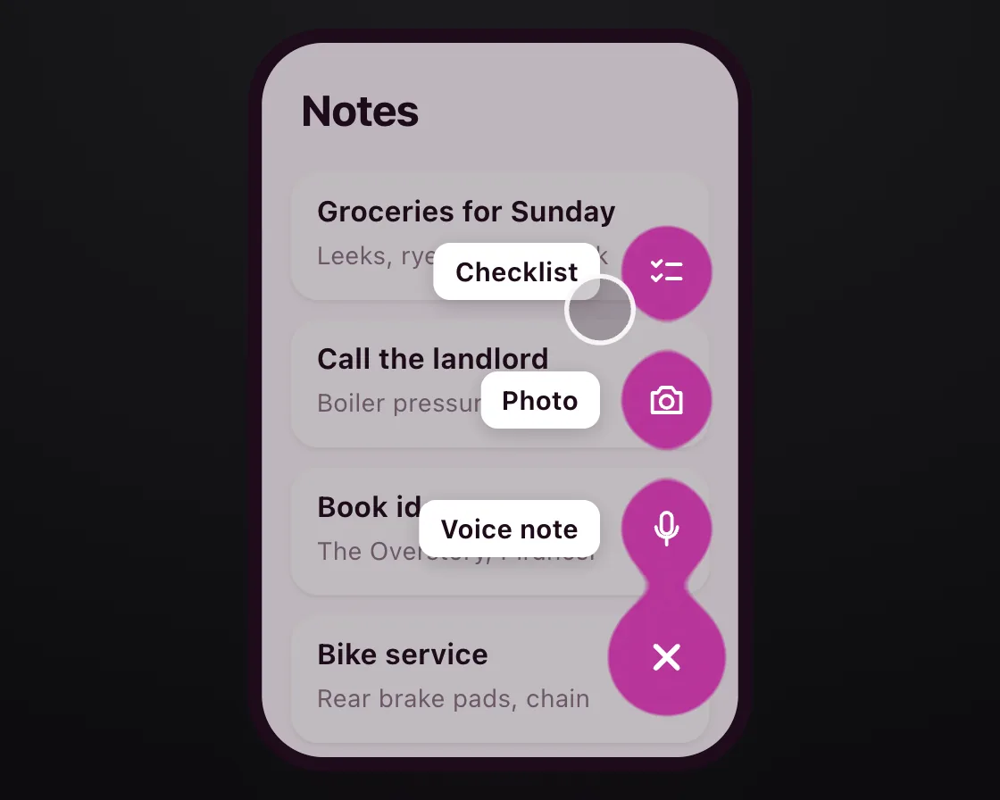

Gooey blobs
Gooey blobs is a DOM effect: blur, then a hard alpha threshold. One plain JavaScript file with no dependencies; add it with npx motion-library add gooey.

Open it live, tune it and copy the code
What is Gooey blobs?
A notes app’s add button oozes its actions out one by one and drains them back in.
How does Gooey blobs work?
The circles are blurred together, then an SVG colour-matrix filter cranks alpha contrast, turning the soft overlap into a hard liquid bridge; icons sit above the filter.
How do I add Gooey blobs to my website?
- In your project folder, run
npx motion-library add gooey. It writesanimations/gooey.js. Needs Node 18 or newer. - Import it and call it with a container element that has a size:
import fx from './animations/gooey.js'; const stop = fx(document.querySelector('#hero')); - Call
stop()to clean up, for example when a component unmounts.
Every setting below is also a flag, so you can install it already tuned: npx motion-library add gooey --blur 20.
What settings can I tweak?
| Setting | Flag | Default | Range | Step |
|---|---|---|---|---|
| Blur | --blur | 10 | 4 to 20 | 1 |
| Actions | --blobs | 3 | 2 to 4 | 1 |
Specifications
- Renderer
- DOM (CSS and the Web Animations API)
- Category
- Morph & SVG
- Dependencies
- None
- File size
- 7.7 KB, unminified
- Interactive
- Yes: it responds to the pointer
- Reduced motion
- Respects prefers-reduced-motion
- Licence
- MIT-0: use it anywhere, no credit needed
Source code
// Gooey blobs: blur the circles together, then an SVG colour matrix turns the soft alpha into a hard edge, so overlapping circles join with a liquid bridge. On a notes app the add button oozes out its actions and draws them back in, which says they belong to the button.
const PARAMS = { blur: 10, blobs: 3 };
export default function (stage) {
const reduce = matchMedia('(prefers-reduced-motion: reduce)').matches;
const id = 'goo-' + Math.random().toString(36).slice(2, 8);
const all = [['Voice note', 'M12 3a3 3 0 00-3 3v6a3 3 0 006 0V6a3 3 0 00-3-3zM6 11a6 6 0 0012 0M12 17v4'], ['Photo', 'M4 8h3l2-3h6l2 3h3v11H4zM12 16.5a3.5 3.5 0 100-7 3.5 3.5 0 000 7z'], ['Checklist', 'M4 7l2 2 3-3M4 15l2 2 3-3M12 8h8M12 16h8'], ['Text note', 'M5 4h14v16H5zM8 9h8M8 13h8M8 17h5']];
const acts = all.slice(0, Math.max(2, Math.min(4, Math.round(PARAMS.blobs))));
const FX = 170, FY = 258, GAP = 54;
const root = document.createElement('div');
root.className = 'go-root';
root.innerHTML = `<style>
.go-root { position: absolute; inset: 0; overflow: hidden; background: radial-gradient(120% 100% at 50% 0%, #1b1b1e, #0d0d0f); font-family: system-ui, -apple-system, sans-serif; }
.go-b { position: absolute; left: 50%; top: 50%; width: 420px; height: 320px; transform-origin: 0 0; }
.go-ph { position: absolute; left: 110px; top: 10px; width: 200px; height: 300px; border-radius: 26px; background: #fbf8fa; overflow: hidden; box-shadow: 0 0 0 6px #1d0b1a, 0 24px 50px -20px rgba(29,11,26,.5); }
.go-h { position: absolute; left: 16px; top: 18px; font-size: 18px; font-weight: 740; letter-spacing: -.02em; color: #1d0b1a; }
.go-n { position: absolute; left: 12px; right: 12px; height: 54px; border-radius: 12px; background: #fff; box-shadow: 0 1px 2px rgba(42,15,38,.08); padding: 9px 11px; box-sizing: border-box; }
.go-n b { display: block; font-size: 12px; font-weight: 650; color: #1d0b1a; } .go-n span { font-size: 10.5px; color: #8a7686; }
.go-dim { position: absolute; inset: 0; background: rgba(29,11,26,.28); opacity: 0; transition: opacity 250ms ease-out; }
.go-ph.open .go-dim { opacity: 1; }
.go-field { position: absolute; inset: 0; filter: url(#${id}); }
.go-blob { position: absolute; left: ${FX - 20}px; top: ${FY - 20}px; width: 40px; height: 40px; border-radius: 50%; background: #b8359a; transform: translateY(0) scale(.7); transition: transform 420ms cubic-bezier(0.23, 1, 0.32, 1); }
.go-fab { left: ${FX - 25}px; top: ${FY - 25}px; width: 50px; height: 50px; transform: none; }
.go-ui { position: absolute; inset: 0; pointer-events: none; }
.go-ico { position: absolute; width: 40px; height: 40px; display: grid; place-items: center; opacity: 0; transition: opacity 160ms ease-out; }
.go-ico svg { width: 18px; height: 18px; }
.go-lab { position: absolute; right: ${200 - FX + 28}px; height: 24px; padding: 0 9px; border-radius: 7px; background: #fff; font-size: 11px; font-weight: 650; color: #1d0b1a; line-height: 24px; white-space: nowrap; box-shadow: 0 2px 8px rgba(29,11,26,.18); opacity: 0; transform: translateX(6px); transition: opacity 180ms ease-out, transform 240ms cubic-bezier(0.23, 1, 0.32, 1); }
.go-ph.open .go-ico, .go-ph.open .go-lab { opacity: 1; transform: none; }
.go-plus { position: absolute; left: ${FX - 25}px; top: ${FY - 25}px; width: 50px; height: 50px; border: 0; padding: 0; background: none; cursor: pointer; pointer-events: auto; display: grid; place-items: center; }
.go-plus svg { width: 22px; height: 22px; transition: transform 300ms cubic-bezier(0.77, 0, 0.175, 1); }
.go-ph.open .go-plus svg { transform: rotate(135deg); }
.go-cur { position: absolute; left: 0; top: 0; width: 26px; height: 26px; margin: -13px; border-radius: 50%; background: rgba(29,11,26,.22); border: 2px solid rgba(255,255,255,.9); pointer-events: none; transition: transform 650ms cubic-bezier(0.23, 1, 0.32, 1); }
.go-cur.down { background: rgba(184,53,154,.45); }
${reduce ? '.go-field { filter: none; } .go-blob { opacity: 0; transition: opacity 200ms ease-out; } .go-fab, .go-ph.open .go-blob { opacity: 1; } .go-lab { transform: none !important; transition-property: opacity; } .go-plus svg { transition: none; }' : ''}
</style>
<svg width="0" height="0" style="position:absolute"><filter id="${id}" x="-50%" y="-50%" width="200%" height="200%"><feGaussianBlur in="SourceGraphic" stdDeviation="${PARAMS.blur}"/><feColorMatrix values="1 0 0 0 0 0 1 0 0 0 0 0 1 0 0 0 0 0 22 -9"/></filter></svg>
<div class="go-b"><div class="go-ph">
<div class="go-h">Notes</div>
${[['Groceries for Sunday', 'Leeks, rye flour, oat milk'], ['Call the landlord', 'Boiler pressure drops'], ['Book ideas', 'The Overstory, Piranesi'], ['Bike service', 'Rear brake pads, chain']].map(([t, s], i) => `<div class="go-n" style="top:${54 + i * 62}px"><b>${t}</b><span>${s}</span></div>`).join('')}
<div class="go-dim"></div>
<div class="go-field">${acts.map(() => '<div class="go-blob"></div>').join('')}<div class="go-blob go-fab"></div></div>
<div class="go-ui">${acts.map(([t, d], i) => `<div class="go-ico" style="left:${FX - 20}px;top:${FY - 20 - (i + 1) * GAP}px;transition-delay:var(--d${i})"><svg viewBox="0 0 24 24" fill="none" stroke="#fff" stroke-width="1.9" stroke-linecap="round" stroke-linejoin="round"><path d="${d}"/></svg></div><div class="go-lab" style="top:${FY - 12 - (i + 1) * GAP}px;transition-delay:var(--d${i})">${t}</div>`).join('')}
<button class="go-plus" type="button" aria-label="New note" aria-expanded="false"><svg viewBox="0 0 24 24" fill="none" stroke="#fff" stroke-width="2.4" stroke-linecap="round"><path d="M12 5v14M5 12h14"/></svg></button></div>
</div><div class="go-cur"></div></div>`;
stage.append(root);
const board = root.querySelector('.go-b'), ph = root.querySelector('.go-ph'), plus = root.querySelector('.go-plus'), cur = root.querySelector('.go-cur');
const blobs = [...root.querySelectorAll('.go-blob:not(.go-fab)')];
// reduced motion: no goo and no travel; the actions sit in place and fade in and out
if (reduce) blobs.forEach((b, i) => { b.style.transform = `translateY(${-(i + 1) * GAP}px)`; });
const fit = () => { const s = Math.min(stage.clientWidth / 420, stage.clientHeight / 320); board.style.transform = `scale(${s}) translate(-50%, -50%)`; };
const ro = new ResizeObserver(fit); ro.observe(stage); fit();
let open = false, manual = -1e9;
const setOpen = o => {
open = o; ph.classList.toggle('open', o); plus.setAttribute('aria-expanded', o);
// Out: nearest blob first, each pulling a bridge from the one below. In: farthest first, so they drain back down.
blobs.forEach((b, i) => {
const delay = o ? i * 60 : (blobs.length - 1 - i) * 50;
b.style.transitionDelay = delay + 'ms';
if (!reduce) b.style.transform = o ? `translateY(${-(i + 1) * GAP}px) scale(1)` : 'translateY(0) scale(.7)';
ph.style.setProperty('--d' + i, o ? delay + 220 + 'ms' : '0ms');
});
};
const onClick = () => { manual = performance.now(); setOpen(!open); };
plus.addEventListener('click', onClick);
const T = new Set(), after = (ms, f) => { const id = setTimeout(() => { T.delete(id); f(); }, ms); T.add(id); };
const move = (x, y) => { cur.style.transform = `translate(${x}px, ${y}px)`; };
const press = () => { cur.classList.add('down'); after(130, () => { cur.classList.remove('down'); if (performance.now() - manual > 4000) setOpen(!open); }); };
move(230, 150);
const cycle = () => {
move(110 + FX, 10 + FY); after(650, press);
after(1000, () => move(250, 120));
after(2700, () => move(110 + FX, 10 + FY)); after(3300, press);
after(3700, () => move(220, 170));
after(4800, cycle);
};
after(150, cycle);
return () => { T.forEach(clearTimeout); T.clear(); ro.disconnect(); plus.removeEventListener('click', onClick); root.remove(); };
}